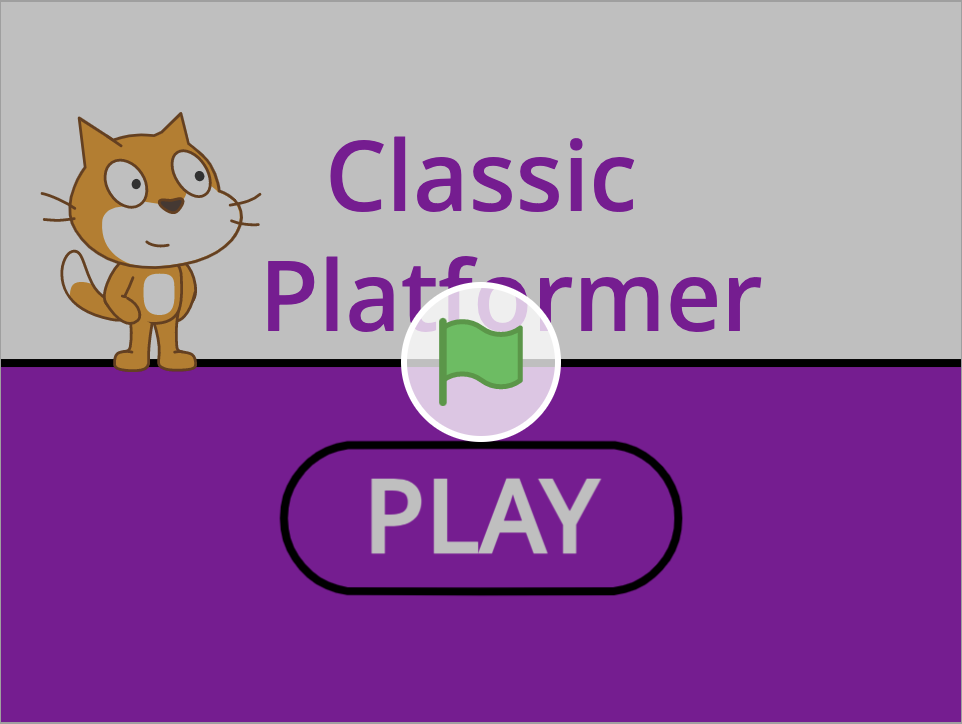
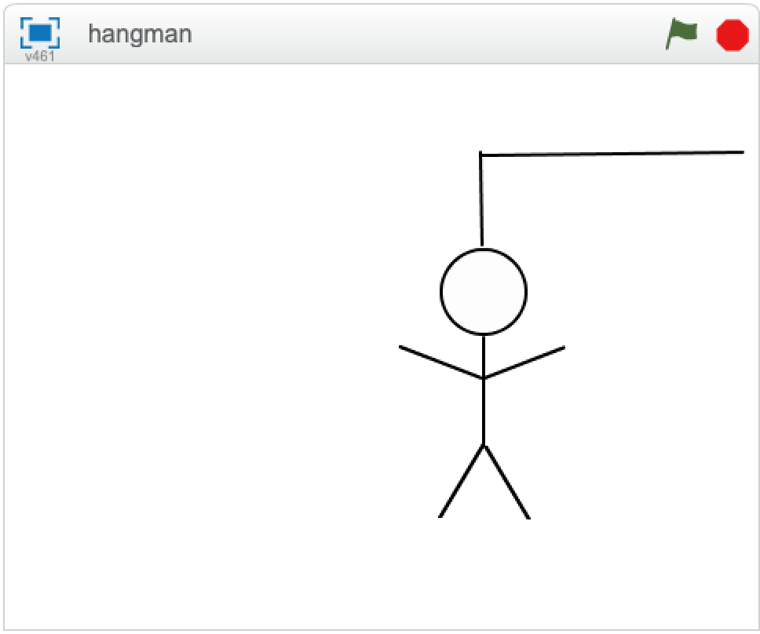
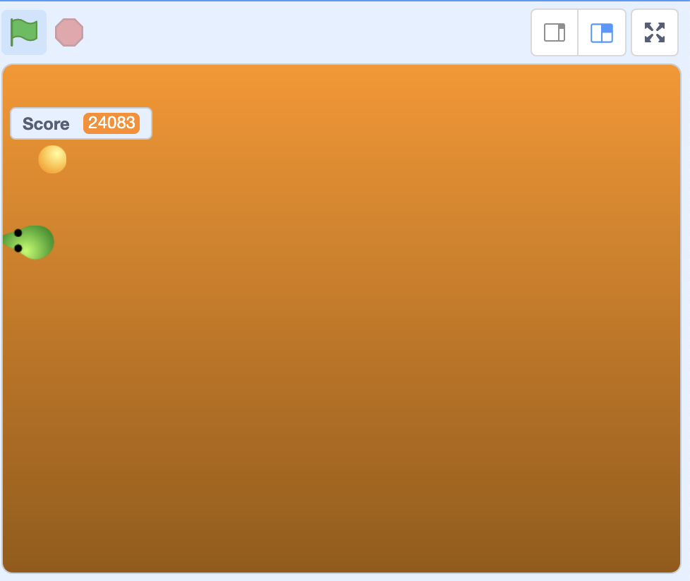

I will use it to share some of my favorite things with you.
Please let me know about broken links!
These are some of my favorite websites:
Here are some of the programs I have made:



Run all of my Python programs right in your browser (no install needed)
2.3. Click here to find out how many days, weeks, and months you will have left in your life if you live to 90 years
2. Tip calculator
3.2. BMI (Body Mass Index) Calculator
3.3. Leap Year Calculator
3. Treasure Island Choose your own Adventure Game
4.1. Flip a Coin
4. Play Rock Paper Scissors with the Computer
5. Password Generator
7. Hangman
8.2. Prime Number Checker
8. Caesar Cipher
9. Secret Auction Program
10.1. Check How Many Days are in a Particular Month; Enter the Year and Month Numbers
10. Calculator
11. Blackjack
12. Guess The Number
14. Higher Lower Game
15. Virtual Coffee Machine
16. Virtual OOP Coffee Machine
17. Trivia Quiz: Test Your Knowledge
18.3. Watch Python Draw Regular Polygons
18.4. Watch Python Generate a Random Walk
18.5. Watch Python Draw a Spirograph
18. Watch Python Draw a Hirst Spot Painting (Using Damien Hirst's Color Palette)
19.1. Etch-A-Sketch App
19. Turtle Race - Bet on a Turtle
21. Snake Game
22. Pong Game
23. Turtle Crossing Game
24. Mail Merge Project
25. U.S. States Game
26. NATO Alphabet
27. Miles to Kilometers Converter
28. Pomodoro Timer
29. Password Manager
31. Flash Card App
33.1. Kanye Quotes
34. GUI Quiz App